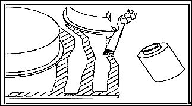

使用旋转钢丝刷清除焊接内外区域的浸渍涂层，注意不要损伤镀锌层；
接地区域尽可能小，产品的防腐保护(阴极电泳涂层) 尽可能多地保留。
彻底清除修理区域(清理)；
对所有焊缝部位使用焊接底涂材料进行底涂(新或旧的部件)；

焊接底涂在使用前必须充分搅拌。
一定要等待焊接底涂干燥后再进行焊接操作；
焊接完成后清除焊接熔渣，注意不要破坏材料的强度；
所有焊缝凹坑用焊料填充补平；
焊缝内外及涂层交界区域均需打磨后喷涂防锈底漆；
清洁和密封内部区域。